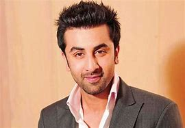
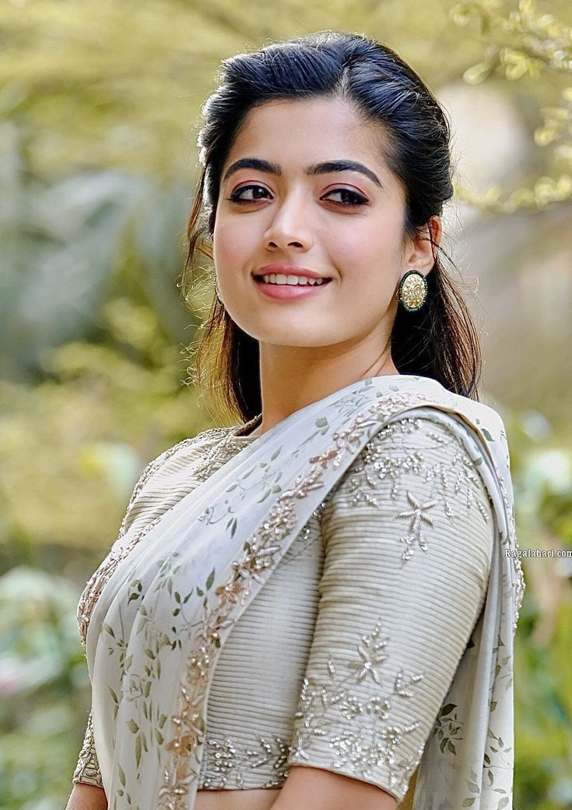
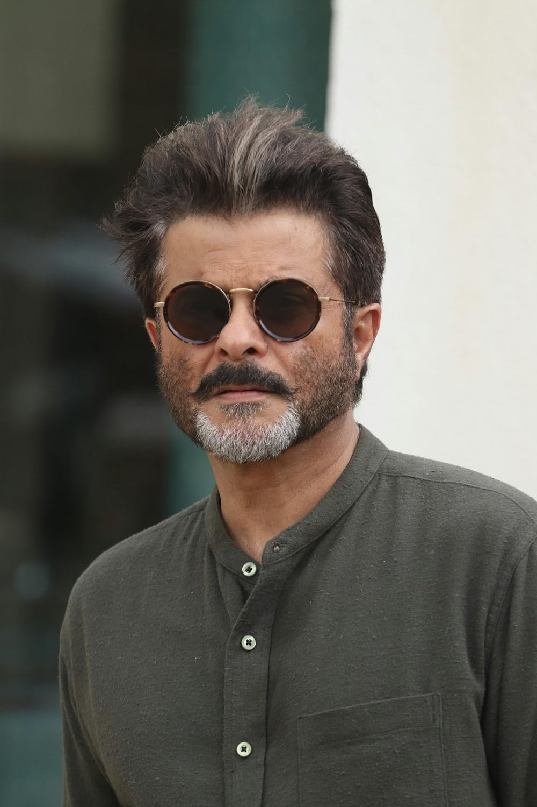
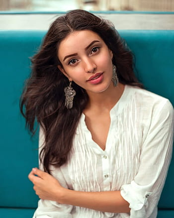
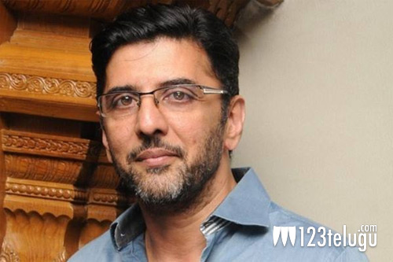

|  |  |  |  |  |
Dark is a German science fiction thriller television series co-created by Baran bo Odar and Jantje Friese.[5][6][7] It ran for three seasons from 2017 to 2020. The story follows characters from the fictional town of Winden, Germany, as they pursue the truth in the aftermath of a child's disappearance. They follow connections between four estranged families to unravel a sinister time travel conspiracy that spans several generations. The series explores the existential implications of time and its effect on human nature and life. It features an ensemble cast. Dark debuted on 1 December 2017 on Netflix; it is the service's first German-language original series. The second season was released on 21 June 2019,[8][9] while the third and final season was released on 27 June 2020.[10][11] Dark was praised for its cast, direction, writing, tone, visuals, musical score, and the ambition and complexity of its narrative. In 2021, the BBC ranked the series as the 58th greatest TV series of the 21st century.[12]